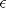
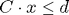
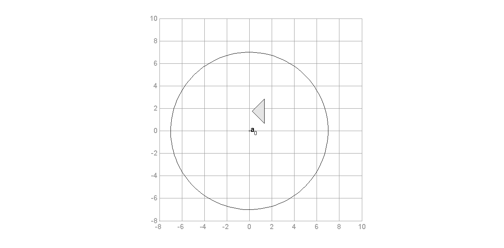
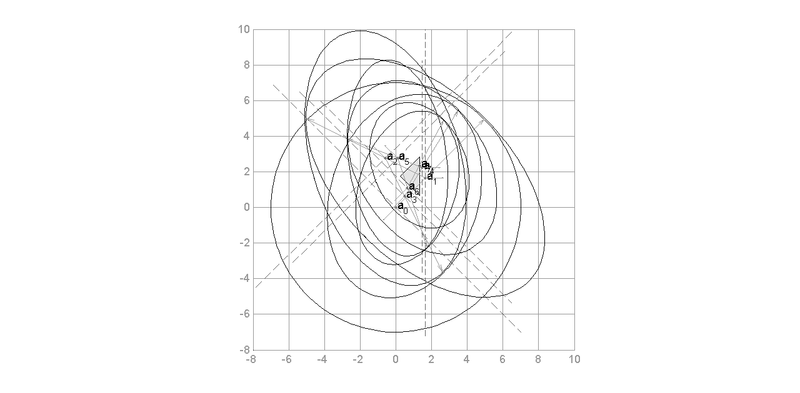
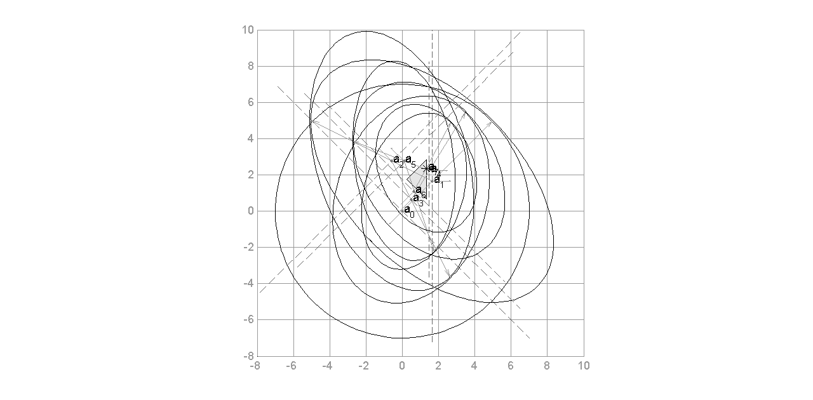

Contents
function [best_a,i] = ellipsoid_method(C, d, varargin)
% ELLIPSOID_METHOD Find a feasible or optimal point in a set of linear % inequalities. % [best_a,i] = ellipsoid_method(C, d) returns best feasible point best_a % of the given linear program C,d and the final iteration i. % % See also separation_oracle_omniscient
Implementation of the ellipsoid method
Basic algorithm according to Grötschel, M., Lovász, L., & Schrijver, A. (1988). Geometric algorithms and combinatorial optimization. Springer, Berlin. with some extensions from Korte, B., Vygen, J., Korte, B., & Vygen, J. (2002). Combinatorial optimization (Vol. 1). Springer. Using the sliding objective method to find an -suboptimal solution.
- Author: Florian Stallmann mail@florian-stallmann.de
- Licence: CC0 1.0 Universal (Public Domain Dedication)
- Version: 2014-09-08
Required methods for plotting
- Ellipse_plot by Nima Moshtagh http://www.mathworks.com/matlabcentral/fileexchange/13844-plot-an-ellipse-in-center-form/content/Ellipse_plot.m
- CON2VERT by Michael Kleder http://www.mathworks.com/matlabcentral/fileexchange/7894-con2vert-constraints-to-vertices/content/con2vert.m
Syntax and parameters
Linear program given as st.  with:
- o as 1-by-n matrix of objective constants
- C as m-by-n matrix of constraints
- d as m-by-1 vector of constraint constants
The following parameters are accepted when calling the method: ellipsoid_method(C, d) ellipsoid_method(C, d, o, CutType) ellipsoid_method(, Name, Value)
CutType = central, shallow, deep Name | Value | Description ----------------------------------------------- optimize | 0*, 1 | Optimize using sliding obj. eps | 0.001 | Threshold for optimization. numiter | int | Max. no. of iterations. Default is calculated depending on cut. radius | int | Initial radius of ball containing polytope. Default is calculated automatically. ignore_blowup | 0*, 1 | Ignore blow-up factor xi, don't compensate rounding errors. plot_fig | 0*, 1 | Plot polytope and ellipsoid. plot_iter | [0 1] | Vector of iterations to plot, e.g. [0 1 5:8 15]. Default: only first two iterations. plot_title | string | Title of figure. Default: no title plot_separating | 0, 1* | Plot separating hyperplane. plot_gradient | 0, 1* | Plot subgradient and direction vector. plot_pause | 0*, 1 | Make a pause and wait for keypress after each iteration to be plotted. * = Default value
Example usage
%Input data: C = [-1 -1;3 0;-2 2]; d = [-2;4;3]; o = [1 1]; %1 - Exact same picture as in book by Grötschel [a,iter] = ellipsoid_method(C,d,'radius',7,'numiter',7,'plot_fig',1,'plot_iter',[0:7],'plot_title','Ellipsoid Method: Example by Grötschel et al. 1981 p. 83','plot_separating',0,'plot_gradient',0,'ignore_blowup',1); %2 - Deep cut and optimization [a,iter] = ellipsoid_method(C,d,o,'deep','optimize',1,'radius',7,'plot_fig',1,'plot_iter',[0 1 2 3 4]); %3 - Wait for keypress after each plotted iteration [a,iter] = ellipsoid_method(C,d,o,'central','optimize',1,'radius',7,'numiter',100,'plot_fig',1,'plot_iter',[12:16],'plot_pause',1);
%Output solution: fprintf('Final point in iteration %i:\n', iter) disp(a) fprintf('Objective Value: %d\n', o*a)
Open Issues and Todos
- Stopping criteria might not be correct for all types of cuts.
- Calculation of N (# iterations) needs to be verified and adjusted according to cut used, ie. shallow cut needs more iterations. Also, eps needs to be considered according to Korte.
- Calculation of R needs to be verified: different formular by Grötschel and Korte.
- Precision factor not used for now.
- Blow-up factor xi for deep cut unknown (currently same as for central cut is used).
Initialization
Setting up the parameters and variables for the method.
% Parse input parameters p = inputParser; defaultCut = 'central'; validCuts = {'central','deep','shallow'}; checkCut = @(x) any(validatestring(x,validCuts)); addRequired(p,'C',@ismatrix); addRequired(p,'d',@isvector); addOptional(p,'objective',@isvector); addOptional(p,'cut',defaultCut,checkCut); addParameter(p,'optimize',0,@isnumeric); addParameter(p,'eps',1e-5,@isnumeric); addParameter(p,'numiter',0,@isnumeric); addParameter(p,'radius',0,@isnumeric); addParameter(p,'ignore_blowup',0,@isnumeric); addParameter(p,'center',[0;0],@isvector); addParameter(p,'plot_fig',0,@isnumeric); addParameter(p,'plot_iter',[0 1],@isvector); addParameter(p,'plot_title','',@ischar); addParameter(p,'plot_separating',1,@isnumeric); addParameter(p,'plot_gradient',1,@isnumeric); addParameter(p,'plot_pause',0,@isnumeric); parse(p,C,d,varargin{:}); % Assign input parameters o = p.Results.objective; eps = p.Results.eps; OPTIMIZE = p.Results.optimize; ignore_blowup = p.Results.ignore_blowup; plot_fig = p.Results.plot_fig; plot_iter = p.Results.plot_iter; plot_title = p.Results.plot_title; plot_sep = p.Results.plot_separating; plot_grd = p.Results.plot_gradient; plot_pause = p.Results.plot_pause; FONTSIZE = 11; [~,n] = size(C); % Use input parameters if set or calculate default ones if p.Results.numiter == 0 %N = 2*n*((2*n+1)*input_size(C)+n*input_size(d)-n^3); %according to Grötschel 3.1.32 N = 50 * (n+1)^2 * input_size(C,d); %according to Grötschel 3.1.37 %N = ceil(10 * n^2 * (2 * log2(n) + 5 * input_size(C,d))); %according to Korte p. 99 %N = 5 * n^2 * ceil(log( (6*R^2*max( norm(o), 1 )) / (r*eps) )); %according to Korte p. 101 else N = p.Results.numiter; end if p.Results.radius == 0 R = max( n * 2^(2*(input_size(C,d)-n^2)) , 1); %according to Grötschel 3.1.32 & p. 80 avoid sqrt! %R = max( n * (1 + 2^(4 * input_size(C,d))) , 1); %according to Korte p. 99 else R = p.Results.radius^2; end %precision = 8*N; % OPEN: precision parameter? % Initialization of ellipsoid matrix and center A = R * eye(n); % take R^2 above to avoid calc of sqrt in line 32 (see Grötschel p. 80) if size(p.Results.center,1) ~= n a = zeros(n,1); else a = p.Results.center; end % Factors for each cut if strcmp(p.Results.cut, 'central') rho = 1/(n+1); %step parameter (length in direction of -b to obtain a_k+1) sigma = n^2 / (n^2 - 1); %dilatation parameter tau = 2 / (n+1); %expansion parameter %xi = 1; % (3.1.40) %blow-up parameter (to compensate rounding errors) xi = 1 + 1/(4*(n+1)^2); %blow up factor (3.1.41) shift = 0; %only used for plotting cutting plane elseif strcmp(p.Results.cut, 'shallow') %beta = 1 / (n+1) %not used because already included in formulas below, but similar to alpha in deep cut. rho = 1/(n+1)^2; sigma = (n^3 * (n+2)) / ((n+1)^3 * (n-1)); tau = 2 / (n*(n+1)); xi = 1 + 1/(2*n^2*(n+1)^2); shift = tau; else % deep cut factors need to be calculated each iteration xi = 1 + 1/(4*(n+1)^2); % OPEEN: same as for central cut? end if ignore_blowup xi = 1; %no rounding error compenstion end % Plot polytope and initial ellipsoid if plot_fig f = figure('Name', 'Ellipsoid Method Visualization'); set(f, 'Units', 'normalized', 'Position', [0.1, 0.1, 0.8, 0.7]); title(plot_title) hold on %color of axis and grid set(gca,'Xcolor',[0.6 0.6 0.6]); set(gca,'Ycolor',[0.6 0.6 0.6]); set(gca,'GridLineStyle','-'); set(gca,'FontSize', FONTSIZE); % Fix the axis scaling and limits axis([-8 10 -8 10]); %axis for example iterations 1-7 %axis([-1 4 0 5]); %axis for example iterations 8-15 %axis([1 1.5 2.5 3]); %axis for example iterations 30-+ %axis([1.3328 1.3336 2.8328 2.8336]); %axis for example gap daspect([1 1 1]); %axis equal V = con2vert(C, d); % function from fileexchange to convert constraints into vertices to plot polytope x = V(:,1); y = V(:,2); k = convhull(V(:,1),V(:,2)); % convex hall of vertices, need for plotting patch(x(k),y(k),[0.9 0.9 0.9]) % plot polytope %patch(x(k),y(k),'y') % plot polytope %patch(V(:,1),V(:,2),'y') % plot polytope %patch('Vertices',V,'FaceColor','y'); % Test if initialization should be plotted if any(0 == plot_iter) Ellipse_plot(inv(A),a) % function from fileexchange to plot ellipse, due to different input format A matrix needs to be inverted text(a(1)+.1, a(2), 'a_0', 'FontSize', FONTSIZE) end grid on %pause program and wait for keypress if plot_pause %Generate eps file for latex print -depsc2 ell_init.eps pause end end % Save best found feasible solution best_a = a; best_obj = 0; % Some debug and info variable feasible_found = 0; num_till_feasible = 0; %number of iterations until first feasible solution num_inside = 0; %number of times point inside ellipsoid is found after first feasible solution num_outside = 0; %number of times point outside ellipsoid is used after first feasible solution
Begin of ellipsoid iterations
Run the desired number of iterations of the ellipsoid method in a loop.
for i=1:N % Ask oracle (returns either point a or separating hyperplane) [c,gamma] = separation_oracle_omniscient(C, d, a); % Oracle just returned input variable "a" (all constraints are satisfied) if all(a == c) % First feasible solution found if feasible_found == 0 num_till_feasible = i-1; %solution was already found in previous iteration feasible_found = 1; %set to 1 at first found feasible solution end % Optimization via sliding objective method if OPTIMIZE % Add objective as constraint for sliding objective optimization c = -o'; % o' for min // -o' for max % Sliding objective method, only if certain threshold is met! if sqrt(c' * A * c) > eps % value of inequality (for deep cut) gamma = -o*a; % o for min // -o for max num_inside = num_inside + 1; %for info purpose: count iterations inside polytope % Save best solution found so far if o*a > best_obj best_a = a; best_obj = o*a; end else best_a = a; % Threshold reached, then stop here break; end else best_a = a; %best_obj = o*a; % No optimization, then stop here break; end else %for info purpose: count iterations outside polytope if feasible_found == 1 num_outside = num_outside + 1; end end % Calculate gradient g and factor b (a_k+1 will be shifted in direction -b) g = c / sqrt(c' * A * c); b = A * g; %b = (norm(A*g) / norm(g)) * g; %test implementation to move directly into direction of gradient instead of A*g % deep cut according to Grötschel 3.1.42 if strcmp(p.Results.cut, 'deep') alpha = (c'*a - gamma) / sqrt(c' * A * c); %actually with alpha=0 we get central cut again rho = (1 + n*alpha) / (n+1); sigma = (n^2 * (1-alpha^2)) / (n^2 - 1); tau = (2*(1+n*alpha)) / ((n+1)*(1+alpha)); shift = -alpha; end % plot separating hyperplane (line is plotted for previous iteration) if plot_fig && plot_sep && any(i == plot_iter) && any(i-1 == plot_iter) % c'*x = c'*a (Korte et al. 2002 p. 84) max_R = ceil(sqrt(max(eig(A)))); % sqrt of eigenvalue/-vector is the max possible radius % test for vertical line (avoid division by 0) if c(2) == 0 %vertical line y = -max_R+a(2):max_R+a(2); x = (a(1)+b(1)*shift) * ones(1,length(y)); %matlab way to plot vertical line else %normal function/line x = -max_R+a(1):max_R+a(1); y = (c'*(a+b*shift) - c(1)*x)/c(2); %Korte p. 92 {z:az=ax} transformed to linear equation end %plot(x, y, 'm--'); plot(x, y, 'LineStyle','--','Color',[0.4 0.4 0.4]); grid on %pause program and wait for keypress if plot_pause print('-depsc2', sprintf('ell_iter_%i_1_hyperplane.eps', i)) pause end end % recalculate variables (Löwner-John-Ellipsoid, central cut) % b = (A * c) / (sqrt(c' * A * c)); % a = a - b/(n+1); % A = (n^2 / (n^2-1)) * (A - (2/(n+1)) * (b * b')); % Parameterized versions of formulas above a_prev = a; %save previous a for drawing purposes a = a_prev - rho * b; %new center of ellipsoid A = xi * sigma * ( (A - tau * (b * b')) ); % output all variables for thesis % i % c % b % a % A % a/norm(a) % % DEBUG: positive definite test % [~,kp] = chol(A); % if kp ~= 0 % A % end % plot ellipsoid if plot_fig && any(i == plot_iter) %plot gradient (plotted for previous iteration) if plot_grd && any(i-1 == plot_iter) g_norm = g / norm(g); %normalize length % quiver(a_prev(1)+b(1)*shift, a_prev(2)+b(2)*shift, g_norm(1), g_norm(2), 0, 'LineStyle','-','Color','green') %plot vector from hyperplane in direction g (subgradient) % quiver(a_prev(1), a_prev(2), -b(1), -b(2), 0, 'LineStyle','-','Color','cyan') %plot vector from previous center in direction -b quiver(a_prev(1)+b(1)*shift, a_prev(2)+b(2)*shift, g_norm(1), g_norm(2), 0, 'LineStyle','-','Color',[0.6 0.6 0.6]) %plot vector from hyperplane in direction g (subgradient) quiver(a_prev(1), a_prev(2), -b(1), -b(2), 0, 'LineStyle','-','Color',[0.6 0.6 0.6]) %plot vector from previous center in direction -b end grid on %pause program and wait for keypress if plot_pause print('-depsc2', sprintf('ell_iter_%i_2_gradient.eps', i)) pause end Ellipse_plot(inv(A),a) % same as above, important: inv(A) only for plotting! text(a(1)+.1, a(2), sprintf('a_{%i}', i), 'FontSize', FONTSIZE) % name center %text(a(1)+.035, a(2), sprintf('a_{%i}', i), 'FontSize', FONTSIZE) % name center (closer for iterations 30+) grid on %pause program and wait for keypress if plot_pause %Generate eps file for latex print('-depsc2', sprintf('ell_iter_%i_3_ellipsoid.eps', i)) pause end end end
Result of the ellipsoid method
Print some information about the output and plot the final result.
% Check if solution in last iteration is feasible (in case the very last iteration found a feasible solution) if feasible_found == 0 [c,~] = separation_oracle_omniscient(C, d, a); if all(a == c) feasible_found = 1; num_till_feasible = i; best_a = a; end end % Output info if feasible_found == 1 fprintf('First feasible solution found in iteration %i!\n', num_till_feasible); if OPTIMIZE fprintf('Optimal value after iteration %i with %i iterations outside polytope and %i iterations inside polytope.\n', i-1, num_outside, num_inside); end if plot_fig % highlight final vertex %plot(a(1), a(2), 'r*', 'MarkerSize', 10) plot(best_a(1), best_a(2), 'k*', 'MarkerSize', 10) grid on %Generate eps file for latex print -depsc2 ell_final.eps end else fprintf('Warning: Solution not feasible after final iteration %i!\n', i); end % Statistics % num_inside % num_outside
First feasible solution found in iteration 7!
Best feasible point after iteration 8:
1.32042710833094
2.36129578082208
Objective Value: 6.043019e+00
